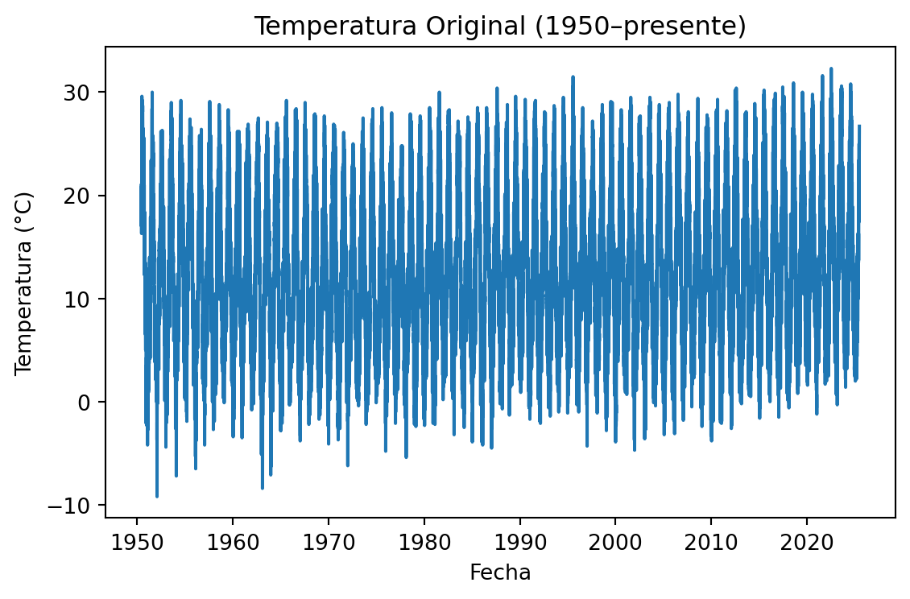
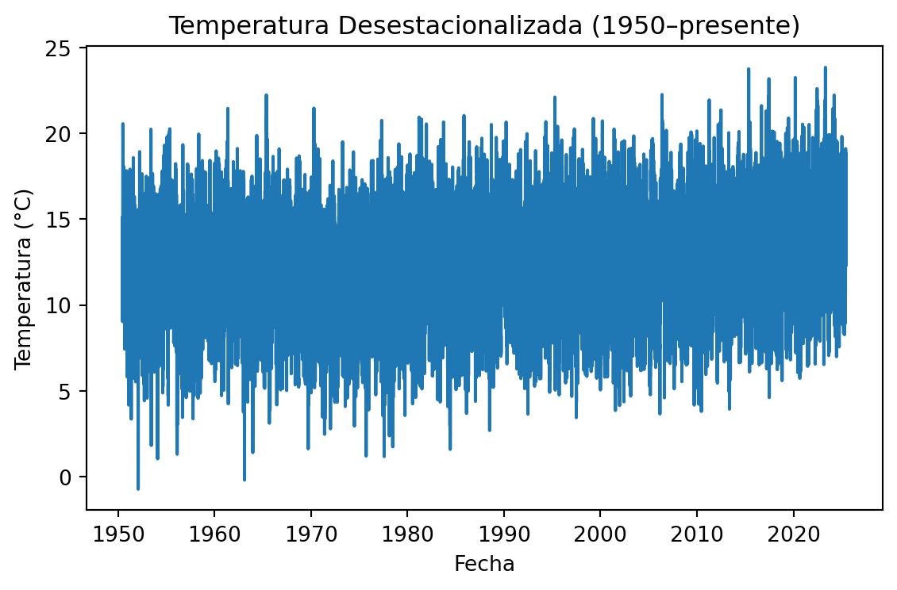
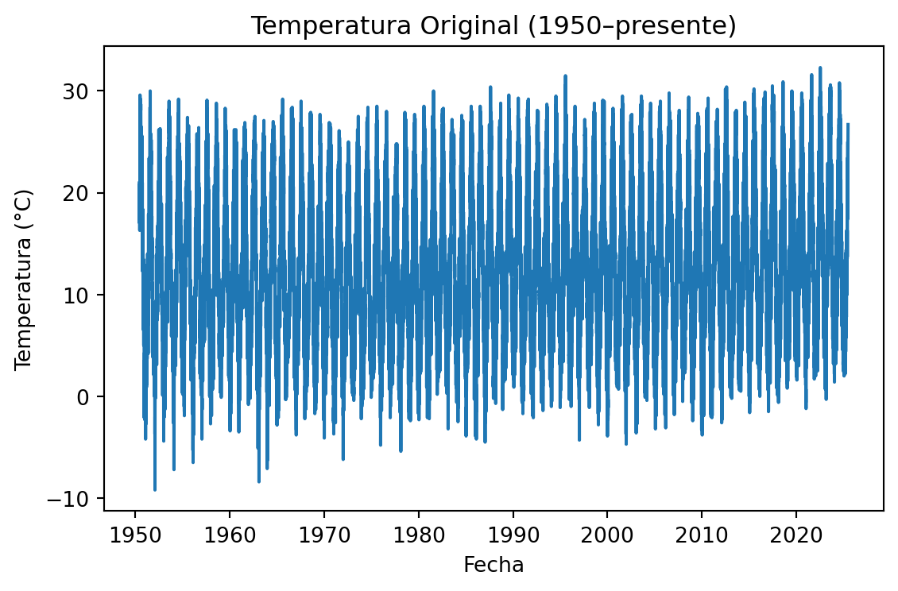
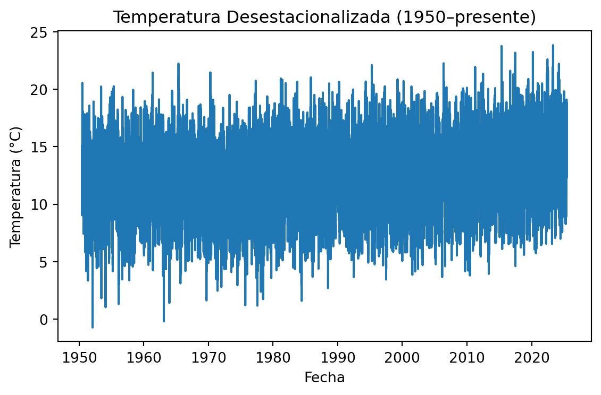
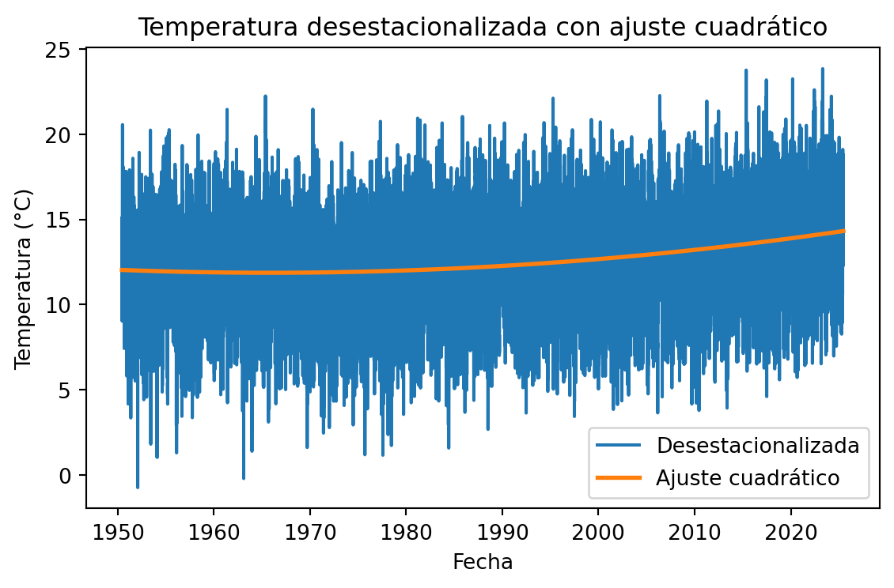
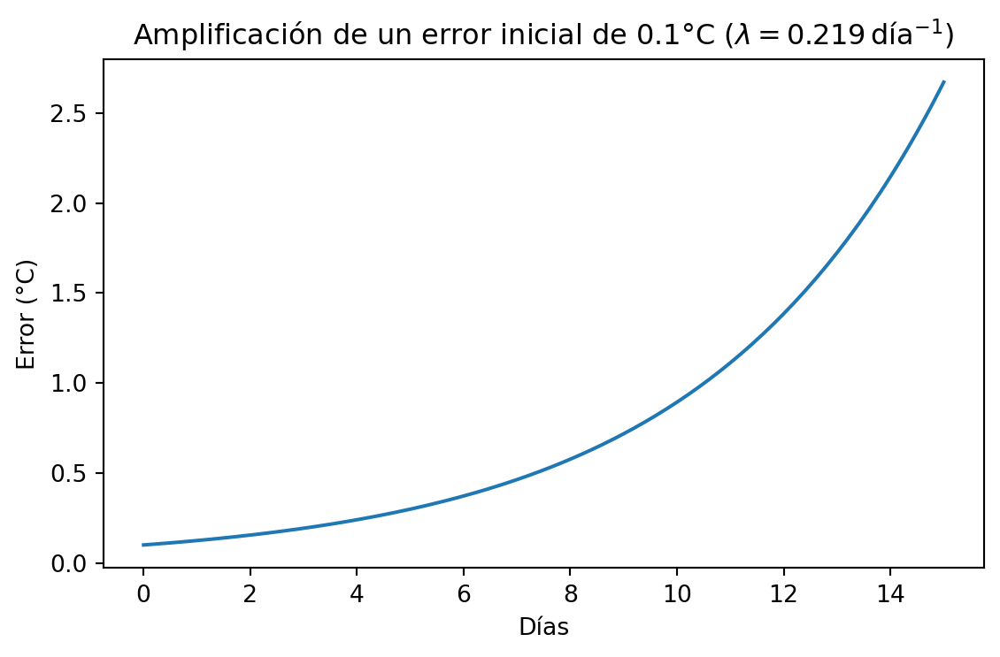
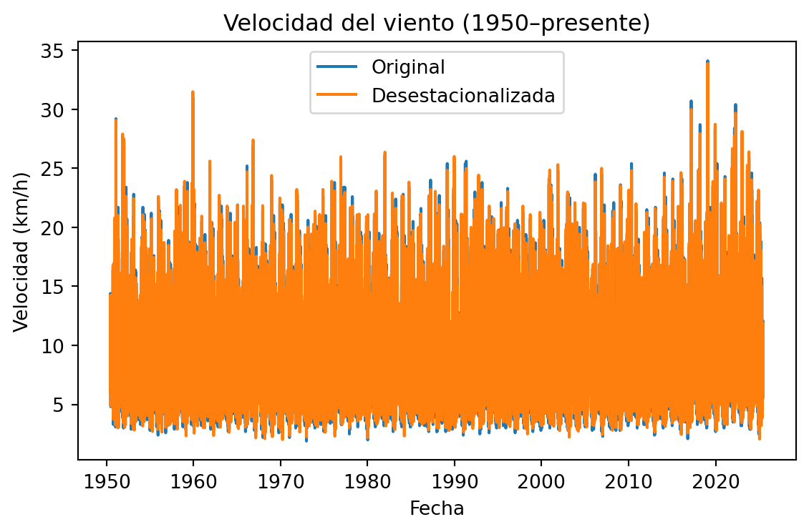
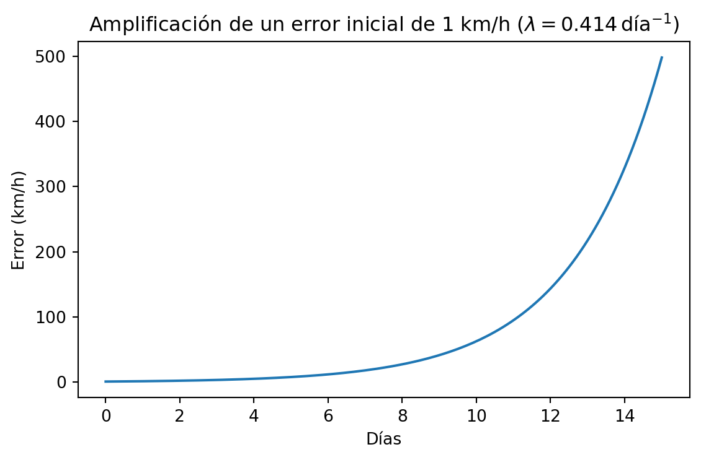

El primer paso a la hora de estudiar el caos en el tiempo meteorológico es disponer de datos históricos de los principales parámetros del tiempo. Existe una excelente web llamada OpenMeteo que proporciona datos históricos de observaciones y predicciones para cualquier localidad, y que además lo hace de forma gratuita en:
https://open-meteo.com/en/docs
Poniéndome manos a la obra, he descargado los datos históricos de Galapagar desde el año 1950. La serie histórica que devuelve la página web tiene este formato:
latitude,longitude,elevation,utc_offset_seconds,timezone,timezone_abbreviation
40.597538,-4.0735474,885.0,7200,Europe/Berlin,GMT+2
time,temperature_2m_mean (°C),precipitation_sum (mm),wind_speed_10m_mean (km/h)
1950-06-07,20.7,0.50,13.1
1950-06-08,18.4,2.30,14.4
1950-06-09,18.6,3.10,10.0
1950-06-10,18.6,3.90,7.8
1950-06-11,18.8,0.50,11.2
1950-06-12,17.0,0.00,9.0
1950-06-13,18.9,0.20,7.2
1950-06-14,21.1,0.00,8.0
1950-06-15,20.2,0.00,12.8
En segundo lugar tenemos que saber qué hacer con estos datos. Después de varias búsquedas en ChatGPT y google encontré un artículo sencillo sobre cómo calcular el exponente de Lyapunov en datos meteorologicos.
Referencia completa: Özgür E. & Yılmaz M. U. (2022). Using Chaos Theory to Determine Average Prediction Times of Different Meteorological Variables: A Case Study in Sivas. Int. J. Adv. Eng. Pure Sci. 34(1):101–106.
El artículo investiga cuánto tiempo, en promedio, pueden predecirse fiablemente tres series diarias (temperatura, velocidad del viento y humedad relativa desde el año 2006 hasta el 2010 para la estación de Sivas en Turquía) usando teoría del caos. Le pasé este artículo a chatGPT y le pedí que reprodujese los cálculos para mis datos de Galapagar. Una de las preguntas que me lanzó de vuelta chatGPT es que si quería usar los valores de los parámetros \(m\) y \(\tau\) que usaban en el estudio de la estación turca. Pedí de vuelta a ChatGPT que eran estos valores, pues al parecer jugaban un papel crítico a la hora de estimar el valor del exponente de Lyapunov.
Retraso \(\tau\)
El retraso \(\tau\) indica cuántos pasos (días) “saltamos” entre cada coordenada al calcular el exponente de Lyapunov. En lugar de usar solo \(x(t)\), usamos
\[
\bigl(x(t),\,x(t+\tau),\,x(t+2\tau),\dots\bigr).
\]
- Si \(\tau\) es muy pequeño, \(x(t)\) y \(x(t+\tau)\) están muy correlacionados y aportan información casi redundante.
- Si \(\tau\) es muy grande, \(x(t)\) y \(x(t+\tau)\) pueden ser casi independientes y perder la conexión dinámica.
El artículo turco revela que es óptimo trabajar con un valor de \(\tau\) igual a 3 para la temperatura. Es decir, analizaremos el exponente de Lyapunov de la serie que nos da la temperatura en Galapagar cada tres días.
Dimensión de embedding \(m\)
La dimensión \(m\) es el número de valores escalonados que usamos para describir el estado del sistema:
\[
\mathbf X(t)=\bigl(x(t),\,x(t+\tau),\,x(t+2\tau),\dots,x(t+(m-1)\tau)\bigr).
\]
Es decir, el estado del sistema en un día, no es solamente el valor de la temperatura ese día, sino el valor de ese día más varios días anteriores. Pues bien, lo que necesitamos saber es cual es la dimensión óptima del estado del sistema. Si por ejemplo solo cojo un día, habrá muchos días que sean similares ya que habrá muchos casos en los que coincida la temperatura media para ese día. Sin embargo esto es engañoso, ya que no se tiene en cuenta el estado pasado del sistema. No es lo mismo estar en un día a 15 grados de temperatura media después de haber pasado una ola de calor, que estár a 15 grados después de varios días de ola de frío. De acuerdo al artículo turco un valor de \(m=12\) es óptimo.
Con estos valores de \(\tau\) y \(m\) le pedí a ChatGPT que me calculase el exponente de Lyapunov de la serie de temperaturas de Galapagar. ChatGPT usa en este caso el mismo algoritmo que para el cálculo del exponente de Laypunov de las simulaciones del péndulo doble. Se trata de un algoritmo bastante complicado cuya comprensión se me escapa. Hay que tener en cuenta que todos estos cálculos los realizo a con el modelo 04-mini-high, que tiene una capacidad matemática muy superior a la esperada de un alumno de bachillerato, y que además es capaz de hacer los cálculos en un entorno interno de Python, y de plotear resultados.
A continuación muestro todos los valores de temperatura que hemos sacado de la web open-meteo. Obviamente en la serie original vemos que hay un componente estacional muy fuerte. Le pedía ChatGPT que estimase la variación estacional y que la quitase de los datos, dándome la gráfica de temperatura desestacionalizada. En ella se ven las variaciones de temperatura como algo más aleatorio ya que hemos quitado las componentes estacionales. No obstante se ve una ligera subida de temperaturas desde el año 1950 hasta el presente, coincidente con el aumento de temperaturas observado a nivel global en la Tierra.


Como curiosidad, le pedía a ChatGPT que hiciese una regresión no lineal de orden 2 para ver como ha ido evolucionando la temperatura media en Galapagar desde 1950.

La temperatura media desestacionalizada ha subido desde 1950 hasta 2025 aproximadamente \(\Delta y = y(2025) - y(1950) \approx 2.23\ ^\circ\mathrm{C}\).
La tasa media de incremento es \(\displaystyle \frac{2.23\ ^\circ\mathrm{C}}{75\ \mathrm{años}} \approx 0.030\ ^\circ\mathrm{C}/\mathrm{año}\) (aproximadamente \(0.3\ ^\circ\mathrm{C}/\mathrm{década}\)). ¡Casi nada!!!!!
Volvamos al tajo. Ahora le pido a ChatGPT que me haga el cálculo del exponente de Lyapunov para estos datos de temperatura, usando el mismo procedimiento y parámetros que en el artículo de la estación de Turquía. El exponente de Lyapunov máximo calculado para la temperatura desestacionalizada es
\[
\lambda_{\max} \approx 0.219\ \mathrm{día}^{-1}.
\]
Veamos en qué se traduce esta exponente de Lyapunov. Al ser positivo sabemos que indica que estamos ante un sistema caótico, y que los errores se amplificarán con el tiempo. Veamos cuando multiplicamos por 10 un error inicial de 0.1 grados Centígrados:
\[ T = \frac{1}{\lambda_{\max}}\ln\Bigl(\frac{L}{\varepsilon}\Bigr) = \frac{1}{0.219}\ln(10) \approx 10.5\ \mathrm{días}. \]
Y ahora veamos de formá gráfica cómo se va amplificando el error inicial de 0.1 grados tras quince días.

Estos valores refuerzan las hipótesis inciales con las que habíamos especulado. Pasadas dos semanas es muy difícil tener estimaciones precisas del tiempo meteorológico.
A continuación cargamos y desestacionalizamos los datos de velocidad del viento (1950–presente), mostramos la serie original y la desestacionalizada:

En este caso no hay gran diferencia entre la componente desestacionalizada y sin desestacionalizar.
El exponente de Lyapunov máximo calculado para la serie de viento desestacionalizada (usando Wolf, \(m=12\), \(\tau=3\)) es
\[
\lambda_{\max} \approx 0.414\ \mathrm{día}^{-1}.
\]
Para un error inicial \(\varepsilon = 1\ \mathrm{km/h}\) y un factor de crecimiento 10× (\(L/\varepsilon=10\)):
\[
T = \frac{1}{\lambda_{\max}}\ln\Bigl(\frac{L}{\varepsilon}\Bigr)
= \frac{1}{0.414}\ln(10)\approx5.6\ \mathrm{días}.
\]

En el caso de la temperatura desestacionalizada, obtuvimos un exponente de Lyapunov
\[
\lambda_{\max}^{\rm temp}\approx0.219\ \mathrm{día}^{-1},
\]
lo que da un horizonte de predictibilidad de
\[
T_{\rm temp}
=\frac{1}{0.219}\ln(10)\approx10.5\ \mathrm{días}.
\]
Para la velocidad del viento desestacionalizada hallamos
\[
\lambda_{\max}^{\rm viento}\approx0.414\ \mathrm{día}^{-1},
\]
y por tanto
\[
T_{\rm viento}
=\frac{1}{0.414}\ln(10)\approx5.6\ \mathrm{días}.
\]
Observamos que
\[
T_{\rm viento}\approx\frac{1}{2}\,T_{\rm temp}.
\]
Esto significa que la serie de viento es más caótica: su exponente de Lyapunov es casi el doble, y los errores iniciales se amplifican mucho más rápido.
Varias razones explican esta diferencia:
¿Qué es un “forzamiento estacional”?
Es la variación periódica y predecible que se repite cada año, debida al cambio de estación (más sol y calor en verano, menos en invierno).
Temperatura vs. viento
Efecto al desestacionalizar